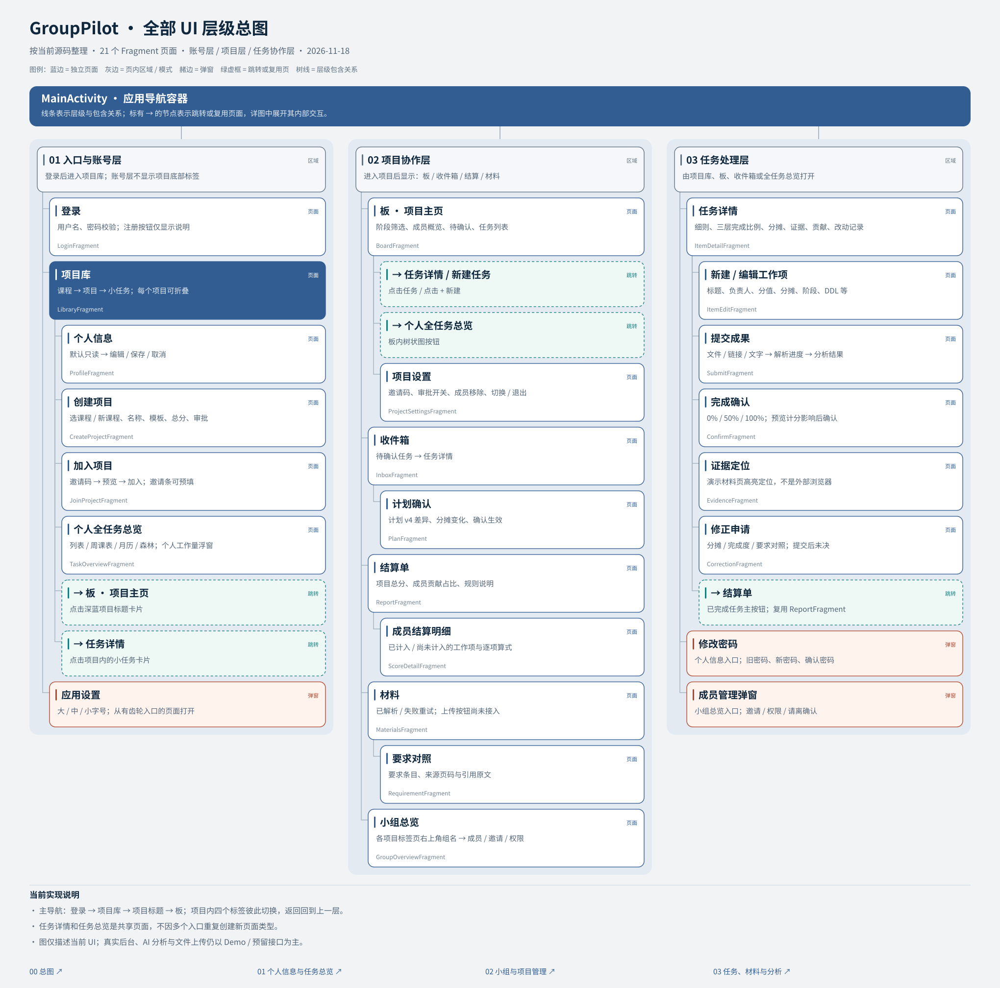
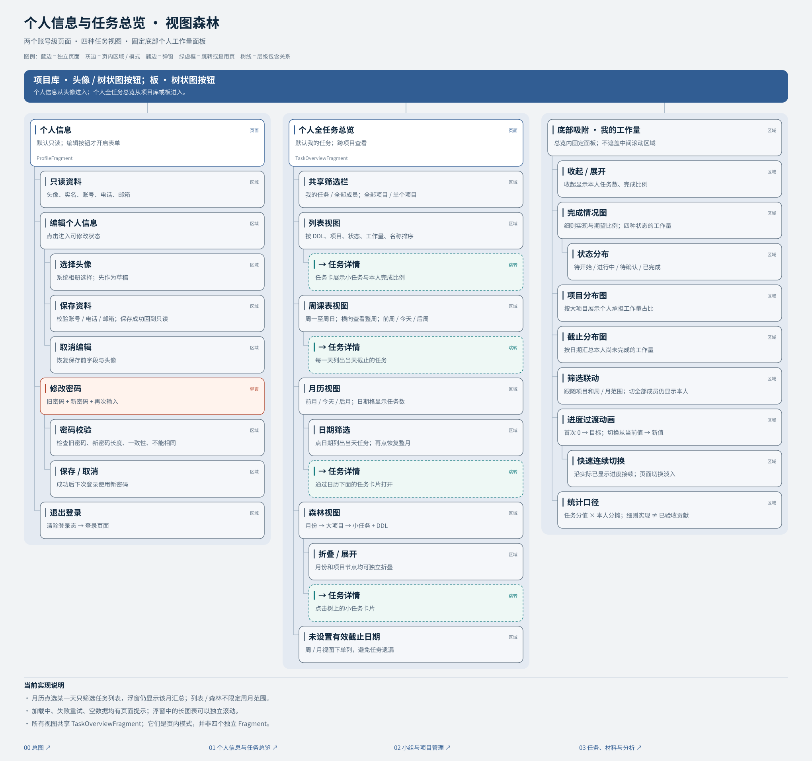
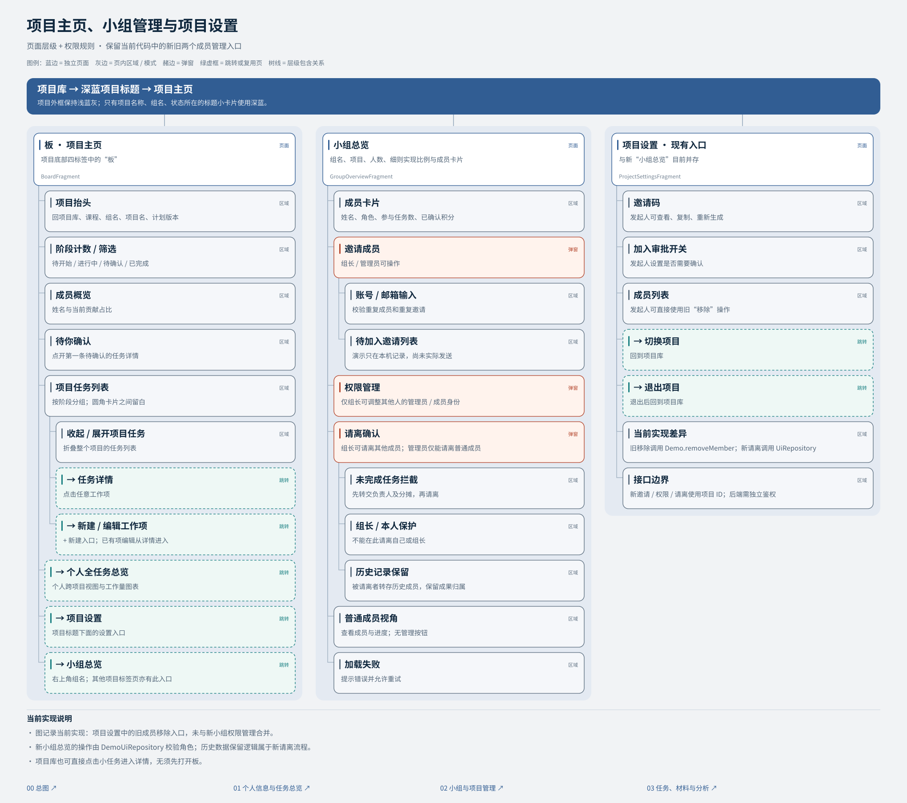
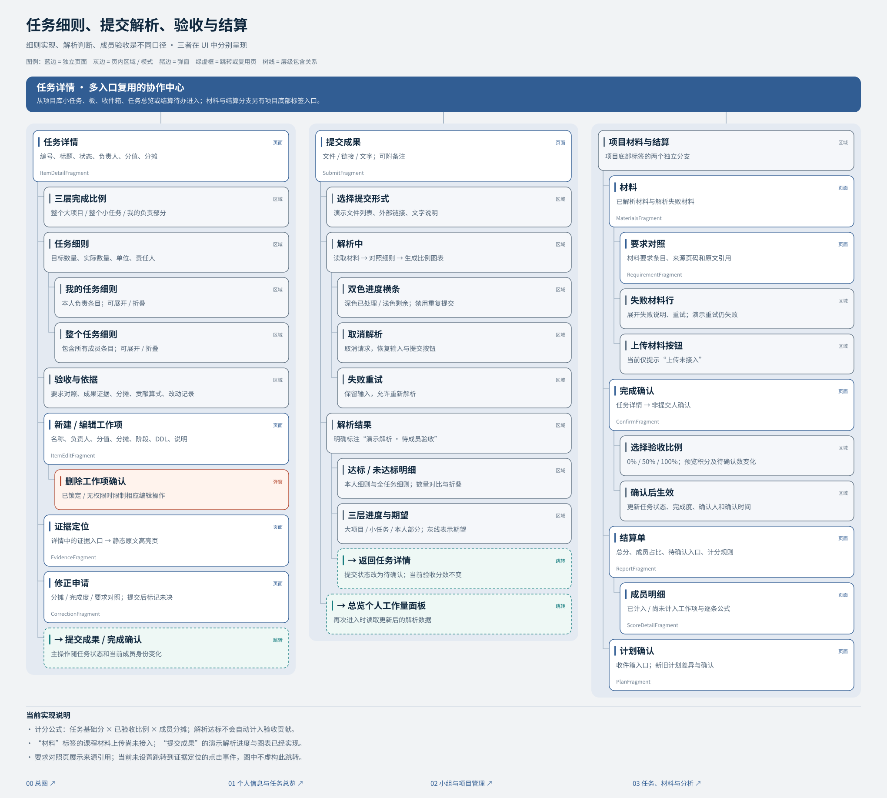

<!doctype html><html lang="zh-CN"><meta charset="UTF-8"><meta name="viewport" content="width=device-width,initial-scale=1"><title>GroupPilot UI 层级图</title><style>body{margin:0;background:#f1f3f5;font:16px 'Microsoft YaHei',sans-serif;color:#10283e}header{padding:24px;position:sticky;top:0;background:white}nav{display:flex;gap:20px;flex-wrap:wrap}a{color:#315d93}section{padding:24px}img{width:100%;height:auto;border-radius:16px}h2{font-size:20px}</style><header><nav><a href="#map0">GroupPilot · 全部 UI 层级总图</a><a href="#map1">个人信息与任务总览 · 视图森林</a><a href="#map2">项目主页、小组管理与项目设置</a><a href="#map3">任务细则、提交解析、验收与结算</a></nav></header><section id="map0"><h2><a href="00-app-navigation.svg" target="_blank">GroupPilot · 全部 UI 层级总图 ↗ 原尺寸 SVG</a></h2></section><section id="map1"><h2><a href="01-profile-and-task-overview.svg" target="_blank">个人信息与任务总览 · 视图森林 ↗ 原尺寸 SVG</a></h2></section><section id="map2"><h2><a href="02-group-overview-and-permissions.svg" target="_blank">项目主页、小组管理与项目设置 ↗ 原尺寸 SVG</a></h2></section><section id="map3"><h2><a href="03-task-material-and-analysis.svg" target="_blank">任务细则、提交解析、验收与结算 ↗ 原尺寸 SVG</a></h2></section></html>